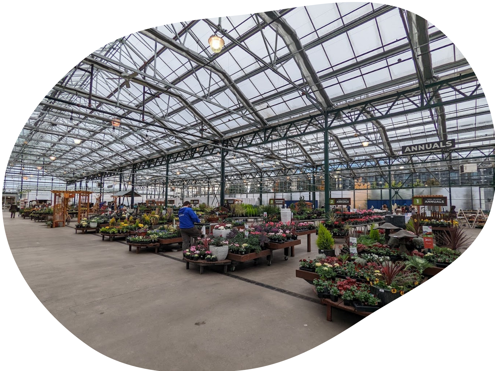
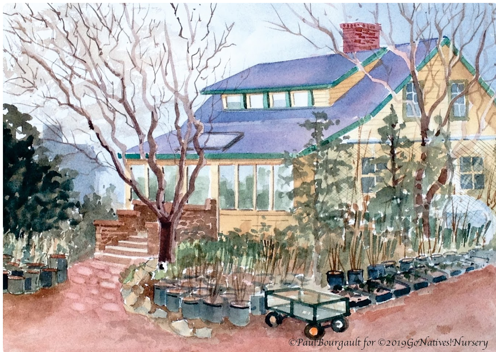
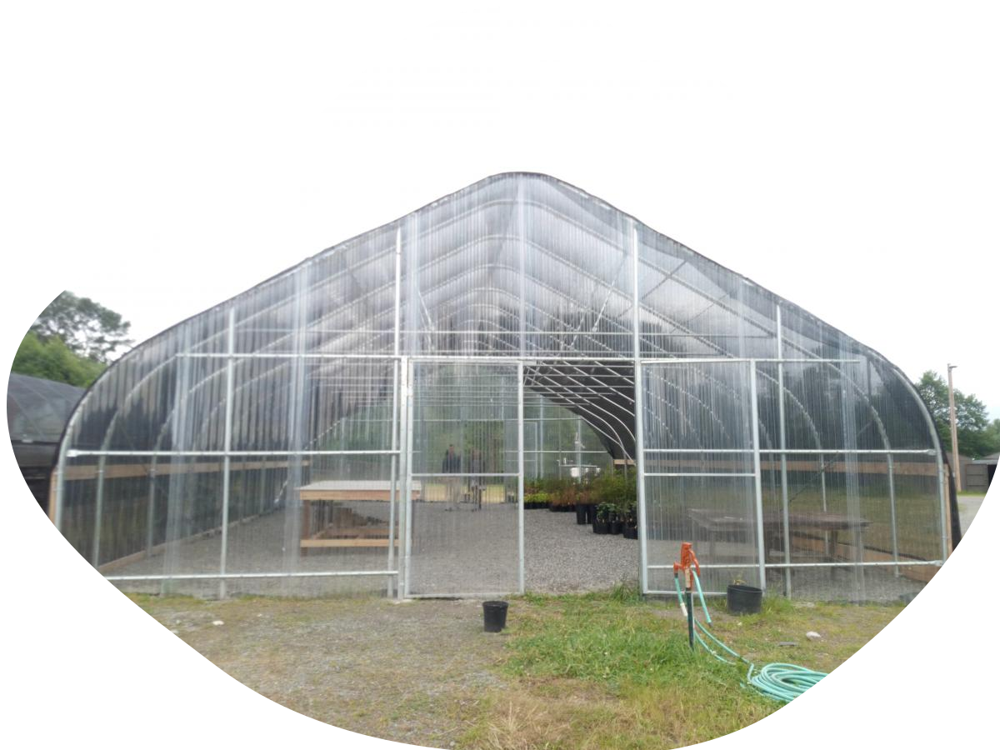
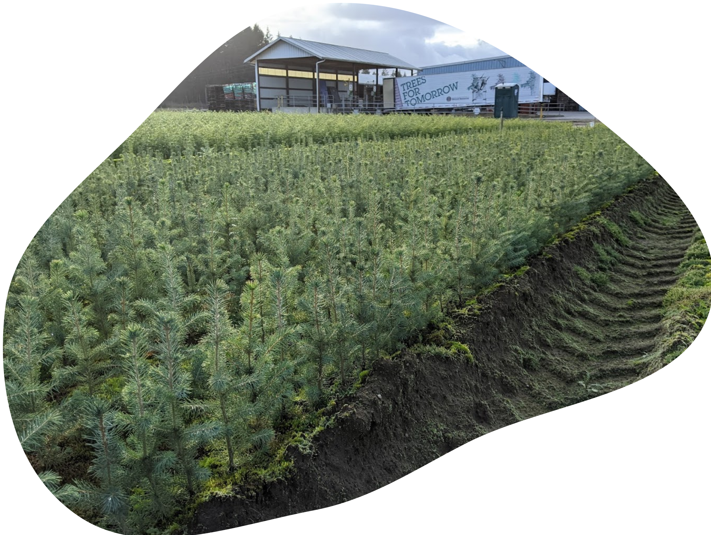
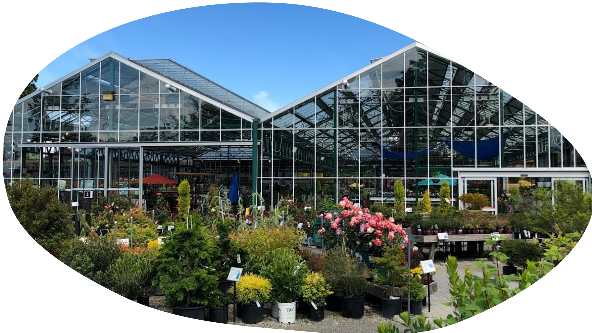

Where to Buy Locally

In an era defined by shifting weather patterns and an increasingly unpredictable climate, the importance of gardening with resilience in mind cannot be overstated. From increasingly warmer summers to wetter winters, adapting your garden to these changes is not just a choice but a necessity.
Below is a curated collection of recommended local garden nurseries. Details on what each one can uniquely offer are provided too. Each one is committed to assisting you in creating gardens that stand strong against the challenges of our changing climate. From native plant specialists to those offering a wealth of sustainable solutions, these nurseries are more than just places to purchase plants; they are invaluable resources for those eager to cultivate resilient, climate-conscious gardens.
Comprehensive Plant Selection: Sky Nursery offers a diverse range of plants that are well-suited to the Pacific Northwest climate. They specialize in native and drought-tolerant varieties, making it easier for customers to create resilient gardens.
Expert Advice: The nursery's knowledgeable staff provides guidance on plant selection, care, and maintenance, ensuring customers make climate-smart choices for their gardens.
Native Plant Focus: Go Natives! Nursery exclusively sells native plants, which are inherently adapted to the local climate. These plants require less water and are more resistant to pests and diseases.
Restoration Expertise: The nursery is run by restoration ecologists, ensuring that customers receive expert advice on creating gardens that contribute to local ecosystem resilience.
3. SER-UW Native Plant Nursery at the University of Washington
Educational Opportunities: This nursery is affiliated with the University of Washington, offering educational resources on climate-resilient gardening. Customers can access research-backed information on plant choices and ecosystem benefits.
Native Plant Research: SER-UW Native Plant Nursery conducts research on native plant species, ensuring the availability of plants that thrive in changing climatic conditions.
4. Washington Department of Natural Resources Webster Forest Nursery
Native Tree Seedlings: Webster Forest Nursery specializes in native tree seedlings, which play a crucial role in carbon sequestration and forest ecosystem health. Planting these trees enhances local climate resilience.
Sustainable Practices: The nursery follows sustainable growing practices, ensuring that the plants they offer are well-suited to the local environment and capable of withstanding climate challenges.
Sustainable Garden Supplies: Swanson’s Nursery provides sustainable gardening solutions, including rain barrels and drought-tolerant plants, helping customers reduce their environmental impact and adapt to changing climate conditions.
Community Engagement: They offer workshops and events that educate the community on climate-resilient gardening practices, fostering a more climate-conscious gardening community in the Shoreline area.
